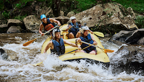
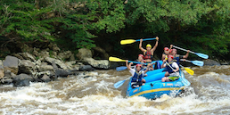
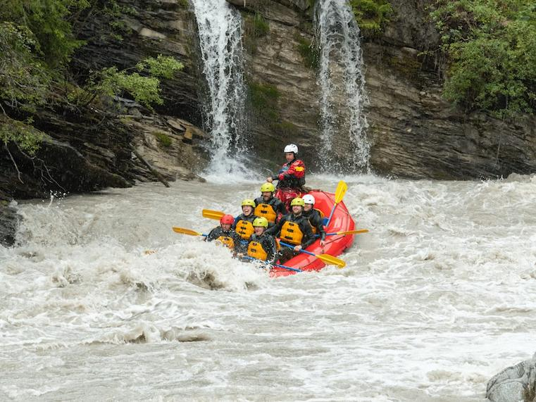
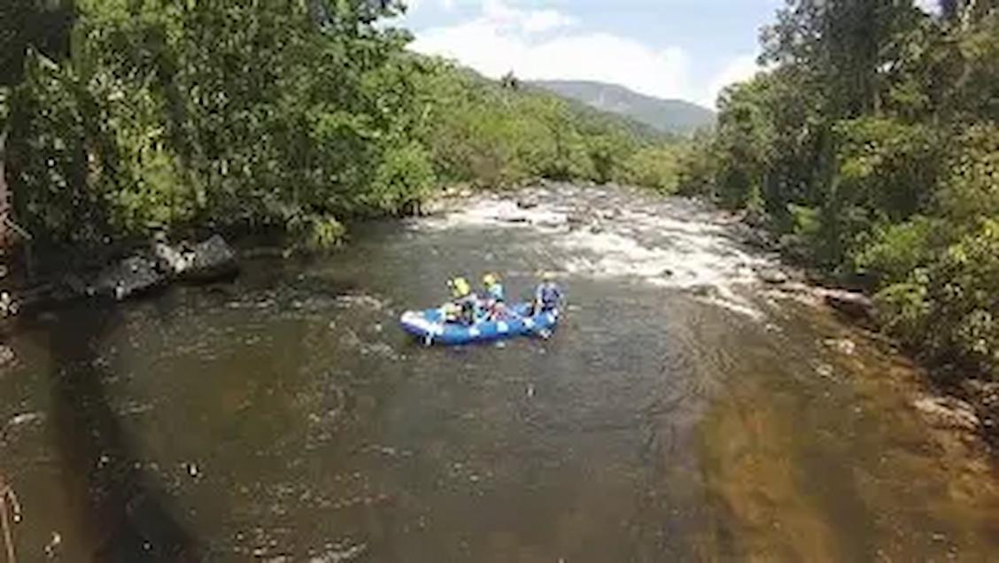
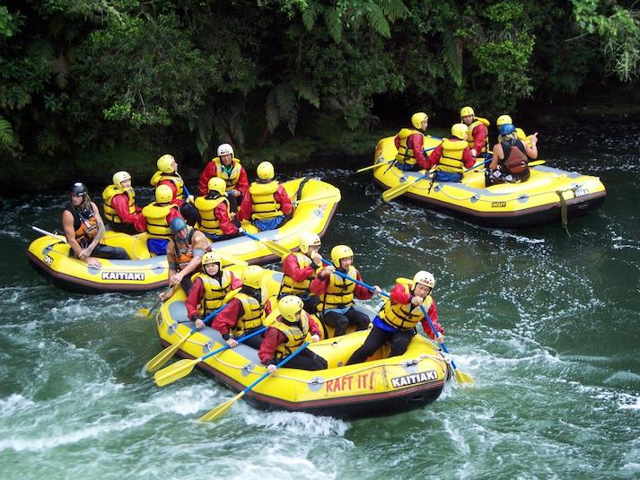

História
A Rafting Aventuras nasceu em 2010, fundada por amantes de esportes radicais. Desde então, temos levado milhares de pessoas a explorar rios e corredeiras com emoção e respeito ao meio ambiente.
A Aventura Está te Esperando!




